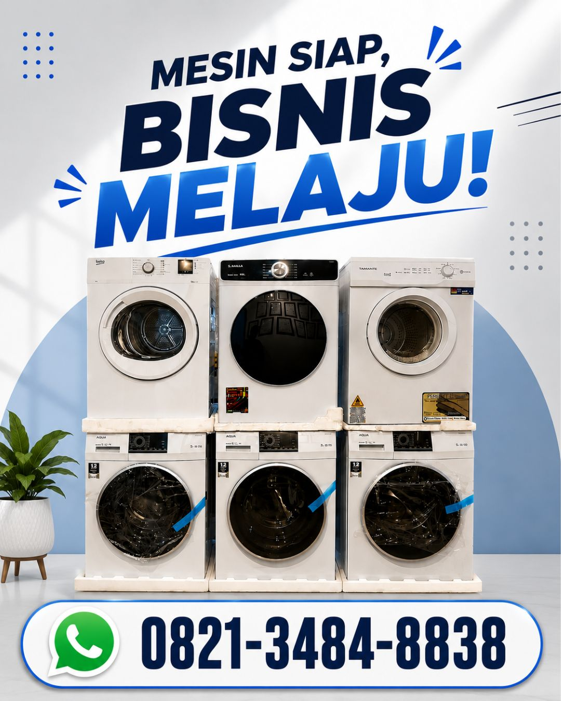

Pilihan Mesin Pengering Laundry Berkualitas untuk Membantu Meningkatkan Efisiensi Operasional Usaha Laundry di Aceh Jaya

BOS Mesin Laundry menyediakan mesin pengering laundry kirim di Aceh Jaya sebagai solusi bagi pelaku usaha yang membutuhkan proses pengeringan pakaian lebih cepat, efisien, dan berkualitas. Mesin pengering sangat cocok digunakan untuk laundry kiloan, hotel, rumah sakit, konveksi, apartemen, asrama, hingga berbagai jenis usaha laundry profesional yang memiliki kapasitas pencucian tinggi setiap harinya. Dengan menggunakan mesin pengering berkualitas, proses operasional menjadi lebih cepat sehingga waktu pengerjaan dapat dipersingkat dan pelayanan kepada pelanggan menjadi semakin optimal. BOS Mesin Laundry menyediakan berbagai pilihan kapasitas yang dapat disesuaikan dengan kebutuhan usaha maupun anggaran pelanggan.
Selain mesin pengering laundry industri, BOS Mesin Laundry juga menyediakan mesin cuci industri, boiler, setrika uap, hydro extractor, trolley laundry, serta paket usaha laundry lengkap yang dirancang untuk mendukung operasional bisnis secara menyeluruh. Seluruh mesin menggunakan teknologi modern yang hemat listrik, mudah dioperasikan, memiliki performa stabil, serta dibuat menggunakan material berkualitas sehingga mampu digunakan dalam jangka panjang. Mesin pengering dirancang agar menghasilkan proses pengeringan yang merata, lebih cepat, dan tetap menjaga kualitas pakaian sehingga sangat cocok digunakan oleh berbagai jenis usaha laundry komersial.
Tidak hanya menyediakan mesin berkualitas, BOS Mesin Laundry juga memberikan layanan konsultasi gratis mengenai pemilihan mesin, kapasitas yang sesuai, penyusunan paket usaha laundry, instalasi, hingga pendampingan penggunaan mesin setelah pembelian. Dengan dukungan layanan pengiriman ke Aceh Jaya, pelanggan dapat memperoleh solusi laundry yang lengkap tanpa harus mencari perlengkapan dari berbagai penyedia. BOS Mesin Laundry berkomitmen memberikan produk bergaransi, pelayanan profesional, serta solusi terbaik untuk membantu meningkatkan produktivitas dan perkembangan bisnis laundry Anda dalam jangka panjang.
Hubungi BOS Mesin Laundry melalui WhatsApp untuk memperoleh informasi mengenai spesifikasi mesin pengering laundry, mesin cuci industri, pilihan kapasitas, paket usaha laundry, harga terbaru, maupun estimasi pengiriman ke Aceh Jaya. Tim kami siap memberikan konsultasi gratis dan membantu Anda memilih mesin yang paling sesuai dengan kebutuhan usaha.
WhatsApp 0821-3484-8838
Jalan Werkudara RT 09 RW 01
Tundan, Purwomartani
Kalasan, Sleman
Yogyakarta